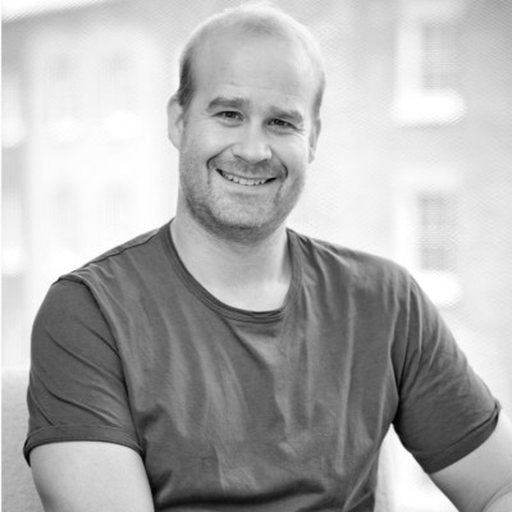
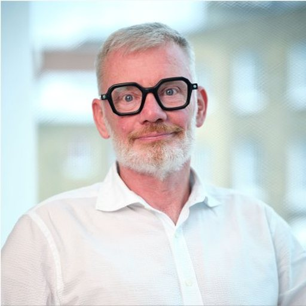

Leadership
The people behind it
A small team with deep experience across autonomous laboratories, immunology, machine learning for protein structure, pharmaceutical development, and clinical data.
Tom Fleming
Founder and CEO
Tom founded OpenImmune and leads it as CEO, setting its scientific direction, partner engagement, and government relations. A chemist with an executive MBA, he spent a decade co-founding and leading Arctoris, the Oxford autonomous drug discovery company, where he took the Ulysses® platform from an idea to deployment with global pharmaceutical companies. He is an Enterprise Fellow of the Royal Academy of Engineering and a Fellow of the Royal Societies of Chemistry, Biology, and Arts, and advises UK government on science, AI, and sovereign capability.
Dr Timothy Hickling
Immunogenicity science
A leading authority on the clinical immunogenicity of therapeutic proteins, Tim has more than two decades in biologics safety, including scientific leadership roles at Roche and Pfizer. He was industrial lead for ARDAT, the European public-private programme on anti-drug antibody responses and immune tolerance, and now consults through Quasor. He is a principal scientific voice on the programme, shaping how immunogenicity is measured and what the resulting data has to prove.
Dr Trevor Howe
Pharma strategy and governance
Trevor spent his career in big pharma, most recently as Director of External Innovation at Johnson & Johnson, with deep experience in computational and medicinal chemistry, structural biology, bioinformatics, and genomics. He has led governance for several large pre-competitive research collaborations, among them UK Biobank, Our Future Health, and the Structural Genomics Consortium. He advises on governance, commercial frameworks, and how to engage the pharmaceutical industry.
Dr Oxana Polyakova
Scientific coordination
Oxana is a drug developer who has taken novel protein therapeutics from concept into clinical development, with a background spanning protein biology, biophysics, immunology, and immuno-oncology. She was a founding scientist at an immuno-oncology company, building biologics that target defined subsets of T cells, and has since served as Chief Scientific Officer at Lava Therapeutics and LiFT Therapeutics. She coordinates the scientific programme and manages the partner and clinical relationships it depends on.
Dr Chris Thorpe
Computational immunology
Chris took his PhD in structural and computational immunology, on how peptides bind the major histocompatibility complex, then spent thirty years in technology, as one of the founders of BioMed Central and on strategy for the UK Government Digital Service. He returned to research to work on the two things that limit immunogenicity predictors: data quality and ancestry bias. Recently an ARISE Fellow at EMBL-EBI, he shapes the programme's scientific strategy and the data requirements that make it usable for AI.

Dr Anthony Bradley
Data strategy
A leader in applying AI and automation to structural data, Anthony co-founded Dalton Therapeutics, where his work includes structural modelling of antibody repertoires at a scale that makes whole-repertoire analysis tractable. He previously built automated, openly released structural datasets at Diamond Light Source. He shapes how the programme's experiments are designed and how the resulting data is structured, so that it is usable by the model and by everyone who builds on it after release.

Dr Garry Pairaudeau
Scientific strategy
Garry has spent two decades taking computational methods into real drug discovery programmes, first leading chemistry at AstraZeneca and then as Chief Technology Officer at Exscientia, where AI-designed molecules reached the clinic. He is currently CEO of Dalton Therapeutics. He brings to the programme the hard-won experience of what it takes for a model to be trusted enough to change a decision.
Professor Charlotte Deane MBE FRS
Structural informatics
One of the leading figures in machine learning for antibody and protein design, Charlotte leads the Oxford Protein Informatics Group, whose methods are relied on across the field and released openly. Her work on modelling antibody structure and repertoires at scale is the modelling capability an immunogenicity model has to be built on. She advises on the model architecture and on what the dataset must contain for it to be learnable.